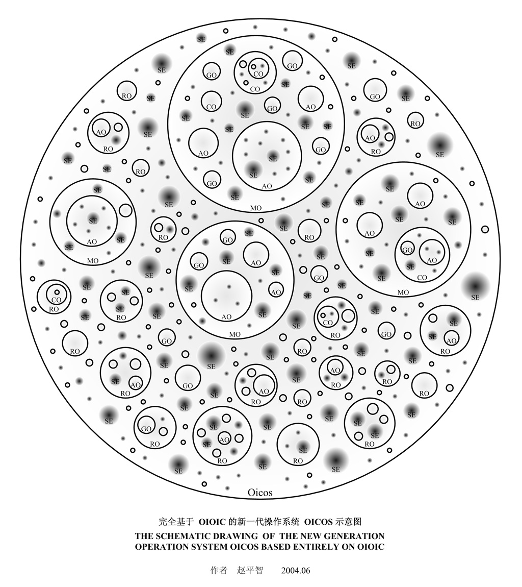
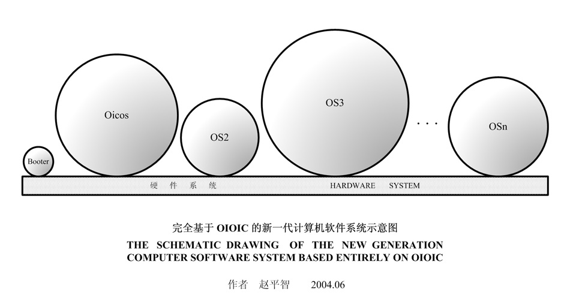

Historical primer (1.0.6): old API and VC6 steps are references only. Use the current tutorial and build guide. Current guide
Chapter 1 : What OIOIC?
Philosophical Thinking
We are describing the world in software, the quality of our software product is the fidelity that it describes the object.
An entity's ability to cope with the effect that the outside acts on it, rests with the entity own structure and the time & space which the outside gives it.
- An entity is born.
- The entity absorbs substances, such as energy absorption, organisms eating.
- The entity releases substances, such as energy release, organisms excretion.
- Entities interact.
- The entity died.
- Create an object.
- The object absorbs data stream.
- The object releases data stream.
- Objects interact.
- Destroy the object.
Terms and concepts
- O or o, OB or ob, OBJ or Obj : In the time of no dissension, generally refers to Object.
- OM or M : Object Mold.
- MSN : M Serial Number, the serial number of object mold.
- OID : the ID of object, OID mustn't be 0.
- EM : Extended Member.
- IC : Inheritance Chain.
- Node or ND or N : the node of IC. There are FND, IND and LND three types of node.
- FND : the first node of IC. An IC must have but just only one FND, namely, OIOIC.
- IND : the inner node of IC. In an IC, apart from FND and LND, other nodes are IND. An IC may have more than one IND, or may not.
- LND : the last node of IC. An IC must have but just only one LND, an IC is born after an object was created, the object is an LND.
- BN : Base Node.
- IBN or IB : Immediate BN.
- DN : Derived Node.
- IDN : Immediate DN.
- BO : Base Object.
- DO : Derived Object.
- MO : Master Object, namely, a processe. (.mo)
- CO : Compile subordinated Object, the object taken in at compile-time, namely, a Static Link Library. (.co)
- RO : Runtime linking Object, the object linked at run-time, namely, a Dynamic Link Library. (.ro)
- SO : Subordinate Object.
- AO : Active Object, only thread can be AO.
- GO : General Object, from AO.
- HO : Host Object, HO is MO or CO or RO.
- PO : Peer Object.
- SE : Subordinate Episome which is subordinate to an object but not to the all SO(s) of the object. For instance, all library functions of the C programming language are OS's SEs, because they don't exclusively belong to any one SO of OS.
- PE : Peer Episome.
- CR : Caller, only AO can be CR.
- CE : Callee, any object can be CE.
- CS : Caller's Seat. The minimum number of CS of a node = the number of CR * ( the number of DN of the longest derivative path of the node + 1 ). If the object has no free CS, then a new CR will be out.
- VO : Visit Object, that is, call an interface of object.
- VR : Visiting Record.
- MR : Mandator, a mandator of CR, an object which consigns the calling CR to visit another object. MR does not have transitivity, for example, object A consigns object B to visit object C, then for C, A is the MR of B, if C let B visit object D during the visiting of B to C, then for D, C is the MR of B, but A isn't the MR of B.
- TOG : the function toggling object's interfaces, shortening to TOG function.
- CRT : the function creating object, shortening to CRT function.
- ACS : the Array of CS, the type of element is VR.
- AND : the Array of ND of IC, the type of element is OBJECT, the number of element is the number of IC's ND. The first element of AND must be LND, otherwise the array is not AND.
- ABN : the Array of BN, the type of element is OBJECT*.
- AIB : the Array of IB, the type of element is OBJECT*. The order of visiting IB is from first to last.
- IRF : Interface Result Function, viz. a function whose return type is IRESULT. For good readability, suggest that the IRF function's name be prefixed by "IRF_".
- DNG buffer : Dangerous buffer. In order to economize memory space, can define a multi-purpose shared memory buffer, we call it DNG buffer if there are risks because it is multifunctional, even though it is finally confirmed that these risks had been removed.
- DNG function : Dangerous function, that is a function using DNG buffer. For good readability, suggest that the DNG function's name be prefixed by "DNG_".
The schematic drawing of the new generation Operation System Oicos based entirely on OIOIC

All black dots are SEs; all circles, including the big circle Oicos, are objects.
The schematic drawing of the new generation computer software system based entirely on OIOIC

Each ball is an object, the first ball is a booting system (Booter), other balls are the Operation System (OS), a computer can simultaneously run multiple OSs. The Booter is a very small object, which is firstly created after the hardware system is powered on, thus the first OIOIC object is born. Each OS is created by the Booter, also, the Booter implements the switching between OSs. If you would like to know what type objects are Booter and OS, should find the answer in the Hardware World.
Copyright©2005-2009 赵平智. All Rights Reserved.